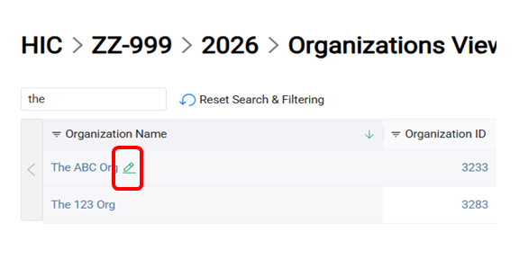
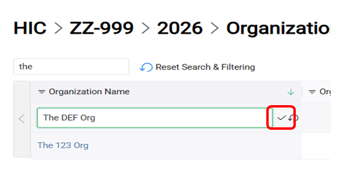
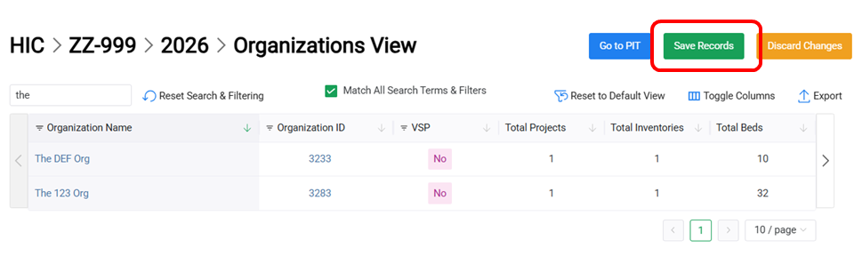

HIC/PIT Issues
The HIC and PIT modules are now open for submissions! Throughout the submission period, we will use this space to provide general information about known issues with the HIC and PIT modules in the HDX. Please check back regularly to remain up to date on the status of all bugs and flag issues we are actively addressing.Troubleshooting
If you notice some aspect of the HIC or PIT modules are not working as expected, we recommend the following steps:
- Log out and log back in again: This is often the best first step to make sure something is really not working as expected. To log out, hover over your name in the top right corner and select the Logout option. Exiting the webpage without logging out using this button is not enough.
- Reset the application: When you reset the application, you won't lose any work you've already saved. Instead, this clears any cached data that has been loaded from the HDX database which may be affecting what you see. To reset the app, while you are logged into the HDX and working in the HIC or PIT module, hover your mouse over on your name in the top right corner and select "Reset App".
- Try a different browser: The HDX team recommends Google Chrome or Microsoft Edge when using the HDX. These are the two browsers that were used most consistently for testing the site. Users have reported isolated incidents of issues that have been specific to Mozilla Firefox.
Available Guidance
- The 2026 Data Submission Guide can be viewed here.
-
Saving HIC data changes: In the HIC module, on the Organizations/Projects/Project Funding/Inventories View pages, data is displayed in a table format. When making edits in these table views, please note there is an additional step needed in order to save your data changes.
- Hover over the data you’d like to edit to bring up a pencil icon which you should click.
- Edit the data.
- Click the checkmark to the right of the data.
- When done making edits to one or more cells, click the green “Save Records” button at the top right of the table to save all of those edits.



Current Outstanding Issues
Resolved Issues
FAQs
This site was migrated from Weebly to GitHub Pages.